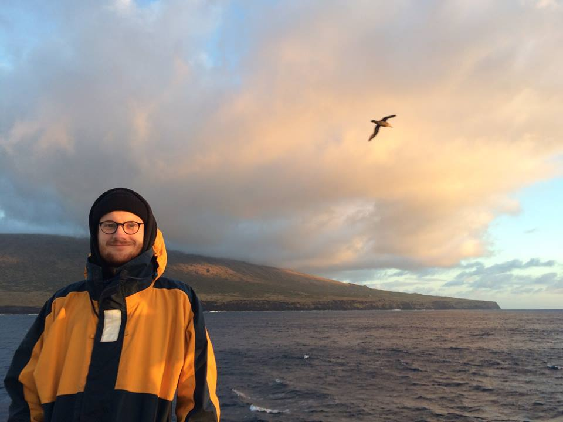

Dr. Aidan Starr
Research Associate in Paleoceanography
Department of Marine and Coastal Sciences, Rutgers University
Cook/Douglas Campus, Rutgers University, New Brunswick, NJ, USA
aidan.m.starr@gmail.com / or / aidan.starr@marine.rutgers.edu
CV
Scholar
GitHub
Last modified:
About me:
I'm a Paleoceanographer and Paleoclimatologist. Currently a Research Associate at Rutgers University, NJ, working under Prof. Liz Sikes on reconstructing Indian Ocean circulation during the last glacial cycle. Previously I worked as a PDRA in Prof. Ian Hall's lab at Cardiff University. I trained as an Oceanographer (MSci from Southampton University) before turning my interest towards ocean-climate interactions during the Plio-Pleistocene. In early 2022 I was awarded a PhD for my thesis titled `Surface and Deep Hydrography across the Mid-Pleistocene Transition; Multi-proxy paleoceanographic reconstructions from the Southwest Indian Ocean'.